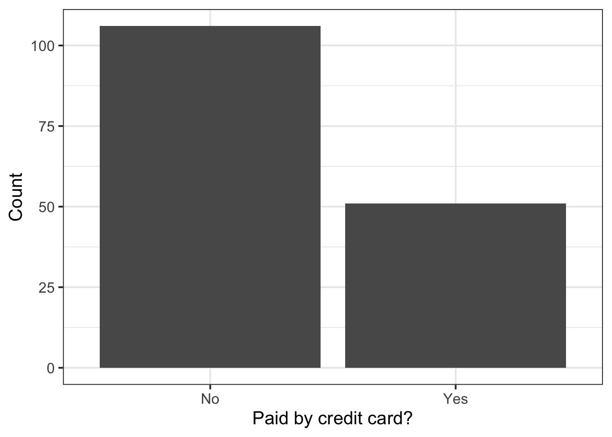
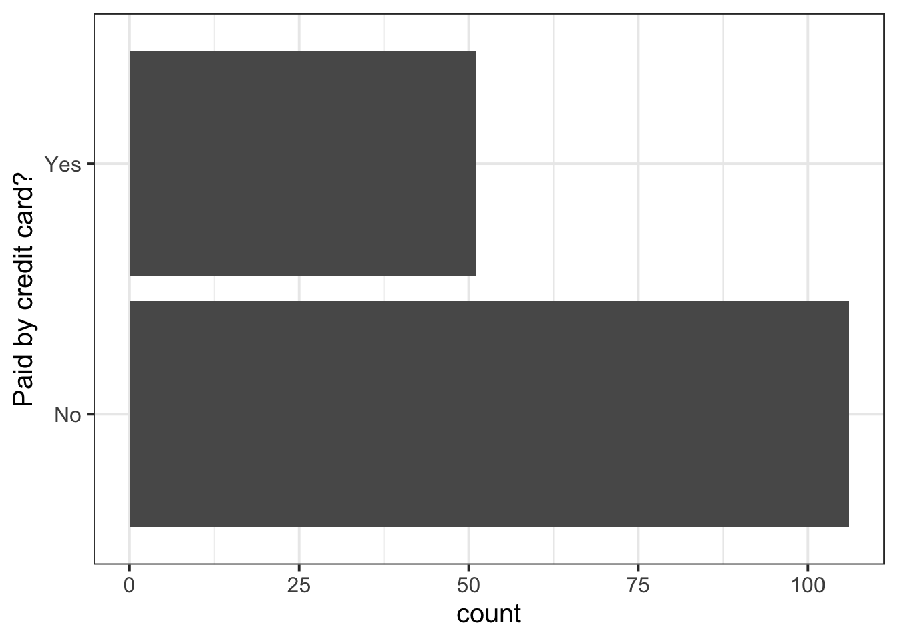
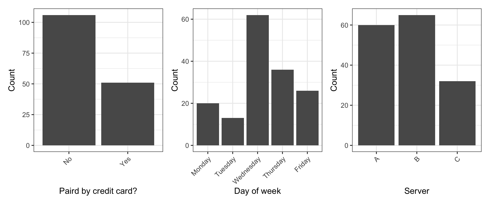
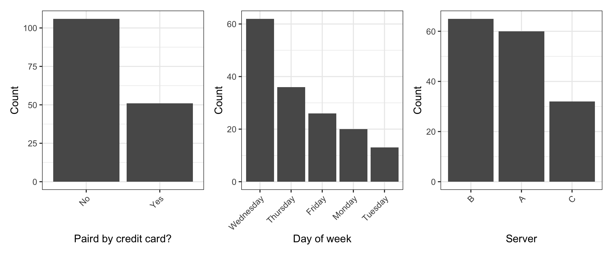

| Variable Name | Description |
|---|---|
| Bill | Size of the bill (in dollars) |
| Tip | Size of the tip (in dollars) |
| Credit | Paid with a credit card? n or y |
| Guests | Number of people in the group |
| Day | Day of the week: m=Monday, t=Tuesday, w=Wednesday, th=Thursday, or f=Friday |
| Server | Code for specific waiter/waitress: A, B, or C |
| PctTip | Tip as a percentage of the bill |
Categorical data
Consider the dataset available at https://uoepsy.github.io/data/RestaurantTips.csv, containing 157 observations on the following 7 variables:
These data were collected by the owner of a bistro in the US, who was interested in understanding the tipping patterns of their customers. The data are adapted from @lock2020.
library(tidyverse)We load the tidyverse package as we will use the functions read_csv and glimpse from this package.
tips <- read_csv("https://uoepsy.github.io/data/RestaurantTips.csv")read_csv is the function to read CSV (comma separated values) files. Once we have read the file, it is stored into an object called tips using the arrow (<-).
head(tips)# A tibble: 6 × 7
Bill Tip Credit Guests Day Server PctTip
<dbl> <dbl> <chr> <dbl> <chr> <chr> <dbl>
1 23.7 10 n 2 f A 42.2
2 36.1 7 n 3 f B 19.4
3 32.0 5.01 y 2 f A 15.7
4 17.4 3.61 y 2 f B 20.8
5 15.4 3 n 2 f B 19.5
6 18.6 2.5 n 2 f A 13.4head() shows the top 6 rows of data. Use the n = ... option to change the default behaviour, e.g. head(<data>, n = 10).
glimpse(tips)Rows: 157
Columns: 7
$ Bill <dbl> 23.70, 36.11, 31.99, 17.39, 15.41, 18.62, 21.56, 19.58, 23.59, …
$ Tip <dbl> 10.00, 7.00, 5.01, 3.61, 3.00, 2.50, 3.44, 2.42, 3.00, 2.00, 1.…
$ Credit <chr> "n", "n", "y", "y", "n", "n", "n", "n", "n", "n", "n", "n", "n"…
$ Guests <dbl> 2, 3, 2, 2, 2, 2, 2, 2, 2, 2, 1, 1, 1, 2, 2, 3, 2, 2, 1, 5, 5, …
$ Day <chr> "f", "f", "f", "f", "f", "f", "f", "f", "f", "f", "f", "f", "f"…
$ Server <chr> "A", "B", "A", "B", "B", "A", "B", "A", "A", "B", "B", "A", "B"…
$ PctTip <dbl> 42.2, 19.4, 15.7, 20.8, 19.5, 13.4, 16.0, 12.4, 12.7, 10.7, 11.…glimpse is part of the tidyverse package and is used to check the type of each variable.
We can use better and more descriptive labels for the categorical variables:
tips$Day <- factor(tips$Day,
levels = c("m", "t", "w", "th", "f"),
labels = c("Monday", "Tuesday", "Wednesday", "Thursday", "Friday"))tips$Day, i.e. the column Day within the data tips, is converted to a factor in R (the appropriate storage mode for categorical variables). Furthermore, it replaces the level “m” with the new label “Monday”, “t” with the new label “Tuesday”, and so on.
tips$Credit <- factor(tips$Credit,
levels = c("n", "y"),
labels = c("No", "Yes"))We don’t have better labels for Server (current values A , B, or C), so we will just convert it to a factor by keeping the current levels:
tips$Server <- factor(tips$Server)Check the relabelled columns:
glimpse(tips)Rows: 157
Columns: 7
$ Bill <dbl> 23.70, 36.11, 31.99, 17.39, 15.41, 18.62, 21.56, 19.58, 23.59, …
$ Tip <dbl> 10.00, 7.00, 5.01, 3.61, 3.00, 2.50, 3.44, 2.42, 3.00, 2.00, 1.…
$ Credit <fct> No, No, Yes, Yes, No, No, No, No, No, No, No, No, No, No, No, N…
$ Guests <dbl> 2, 3, 2, 2, 2, 2, 2, 2, 2, 2, 1, 1, 1, 2, 2, 3, 2, 2, 1, 5, 5, …
$ Day <fct> Friday, Friday, Friday, Friday, Friday, Friday, Friday, Friday,…
$ Server <fct> A, B, A, B, B, A, B, A, A, B, B, A, B, B, B, B, C, C, C, C, C, …
$ PctTip <dbl> 42.2, 19.4, 15.7, 20.8, 19.5, 13.4, 16.0, 12.4, 12.7, 10.7, 11.…Last week, we also saw that if someone tipped more than 100% of the bill size, it was likely a data input error and we decided to replace that value with NA (not available):
The mutate function takes as arguments:
- column name
- =
- how to compute that column
The syntax for ifelse is:
ifelse(test_condition,
value_if_true,
avalue_if_false)tips <- tips |>
mutate(
PctTip = ifelse(PctTip > 100, NA, PctTip)
)This displays the frequency distribution of credit card payers:
plt_credit <- ggplot(tips, aes(x = Credit)) +
geom_bar() +
labs(x = "Paid by credit card?", y = "Count")
plt_credit
You can even flip the coordinates, if you wish to, using the coord_flip() function:
ggplot(tips, aes(x = Credit)) +
geom_bar() +
labs(x = "Paid by credit card?") +
coord_flip()
You can use the patchwork package to place graphs side by side. Simply create an object for each graph, and concatenate the objects with | for horizontal concatenation and / for vertical concatenation of graphs. You can even combine this by using parentheses, e.g. (plot1 | plot2) / (plot3 | plot4) for 2 rows and 2 columns.
Run install.packages("patchwork") first in your R console
We can display the frequency distribution of all the categorical variables: Credit, Day, and Server:
NoteRotate x-axis labels
To rotate x-axis labels by 90 degrees, you can use this code:
theme(axis.text.x = element_text(angle = 90, vjust = 0.5, hjust=1))
To rotate the labels by 45 degrees, you can use: theme(axis.text.x = element_text(angle = 45, vjust = 1, hjust=1))
Don’t worry, no one remembers it. People always google “rotate x-axis labels ggplot” to find it.
library(patchwork)
plt1 <- ggplot(tips, aes(x = Credit)) +
geom_bar() +
labs(x = "Paird by credit card?", y = "Count") +
theme(axis.text.x = element_text(angle = 45, vjust = 1, hjust=1))
plt2 <- ggplot(tips, aes(x = Day)) +
geom_bar() +
labs(x = "Day of week", y = "Count") +
theme(axis.text.x = element_text(angle = 45, vjust = 1, hjust=1))
plt3 <- ggplot(tips, aes(x = Server)) +
geom_bar() +
labs(y = "Count") +
theme(axis.text.x = element_text(angle = 45, vjust = 1, hjust=1))
plt1 | plt2 | plt3
NoteSorting the barplot
If wanted, you can sort the bars in order of frequency by using the fct_infreq() function.
In the last plot, plt3, this involves changing the first row from ggplot(tips, aes(x = Server)) to ggplot(tips, aes(x = fct_infreq(Server))).
In these plot I have preferred not to do so, as changing the order of levels may confuse the reader when the factors have easily understood ordering: credit (No/Yes), day (Mon,Tue,Wed,Thu,Fri), server (A,B,C)
library(patchwork)
plt1 <- ggplot(tips, aes(x = fct_infreq(Credit))) +
geom_bar() +
labs(x = "Paird by credit card?", y = "Count") +
theme(axis.text.x = element_text(angle = 45, vjust = 1, hjust=1))
plt2 <- ggplot(tips, aes(x = fct_infreq(Day))) +
geom_bar() +
labs(x = "Day of week", y = "Count") +
theme(axis.text.x = element_text(angle = 45, vjust = 1, hjust=1))
plt3 <- ggplot(tips, aes(x = fct_infreq(Server))) +
geom_bar() +
labs(x = "Server", y = "Count") +
theme(axis.text.x = element_text(angle = 45, vjust = 1, hjust=1))
plt1 | plt2 | plt3
A frequency table can be obtained using:
tbl_credit <- tips |>
count(Credit) |>
mutate(
Percent = round((n / sum(n)) * 100, digits = 2)
)
tbl_credit# A tibble: 2 × 3
Credit n Percent
<fct> <int> <dbl>
1 No 106 67.5
2 Yes 51 32.5tbl_day <- tips |>
count(Day) |>
mutate(
Percent = round((n / sum(n)) * 100, digits = 2)
)
tbl_day# A tibble: 5 × 3
Day n Percent
<fct> <int> <dbl>
1 Monday 20 12.7
2 Tuesday 13 8.28
3 Wednesday 62 39.5
4 Thursday 36 22.9
5 Friday 26 16.6 tbl_server <- tips |>
count(Server) |>
mutate(
Percent = round((n / sum(n)) * 100, digits = 2)
)
tbl_server# A tibble: 3 × 3
Server n Percent
<fct> <int> <dbl>
1 A 60 38.2
2 B 65 41.4
3 C 32 20.4You can create nice tables with the kbl command from the kableExtra package.
Run install.packages("kableExtra") first in your R console
library(kableExtra)
kbl(list(tbl_credit, tbl_day, tbl_server), booktabs = TRUE)| Credit | n | Percent |
|---|---|---|
| No | 106 | 67.5 |
| Yes | 51 | 32.5 |
| Day | n | Percent |
|---|---|---|
| Monday | 20 | 12.74 |
| Tuesday | 13 | 8.28 |
| Wednesday | 62 | 39.49 |
| Thursday | 36 | 22.93 |
| Friday | 26 | 16.56 |
| Server | n | Percent |
|---|---|---|
| A | 60 | 38.2 |
| B | 65 | 41.4 |
| C | 32 | 20.4 |
Frequency tables of categorical variables
NoteHow do I arrange by descending frequency order?
Add arrange(desc(<column_of_freq>)). For example:
tbl_day <- tips |>
count(Day) |>
mutate(
Percent = round((n / sum(n)) * 100, digits = 2)
) |>
arrange(desc(n))
tbl_day# A tibble: 5 × 3
Day n Percent
<fct> <int> <dbl>
1 Wednesday 62 39.5
2 Thursday 36 22.9
3 Friday 26 16.6
4 Monday 20 12.7
5 Tuesday 13 8.28If you just did arrange(n), it would be in ascending order.
NoteHow do I rename the frequency and percent columns?
You can specify a different name for the column of counts by using name = "new name". If you don’t specify it, the default is n.
You can specify any valid name for the percentages inside of mutate.
For example:
tbl_day <- tips |>
count(Day, name = "Freq") |>
mutate(
Perc = round((Freq / sum(Freq)) * 100, digits = 2)
) |>
arrange(desc(Freq))
tbl_day# A tibble: 5 × 3
Day Freq Perc
<fct> <int> <dbl>
1 Wednesday 62 39.5
2 Thursday 36 22.9
3 Friday 26 16.6
4 Monday 20 12.7
5 Tuesday 13 8.28From the univariate distribution (or marginal distribution) of each categorical variable we see that the most common payment method was not a credit card, and the most common day of the week to dine at that restaurant was Wednesday, followed by Thursday and Friday. Finally, most parties were waited on by server B.
The mode of a variable is the value that appears most often.
The term comes from the French expression “à la mode”, i.e. in fashion. If you think about it, something is considered to be in fashion if it’s worn very often.